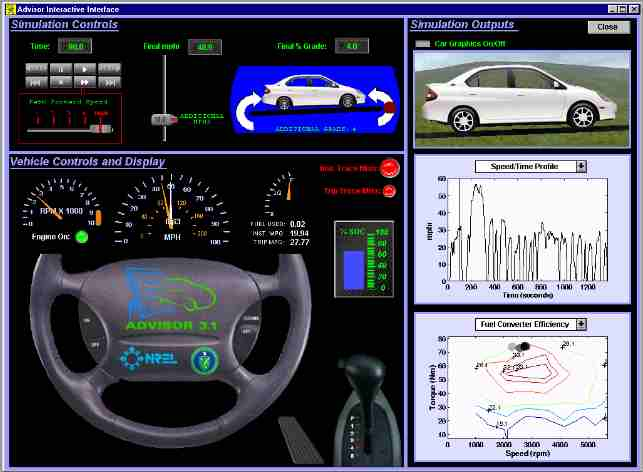
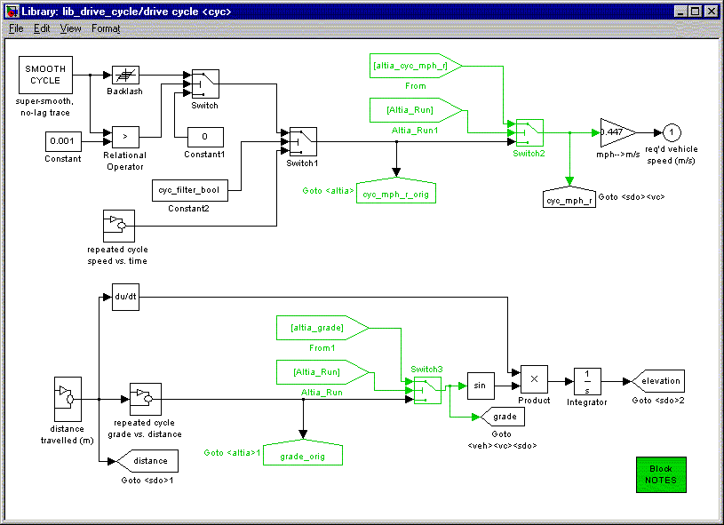
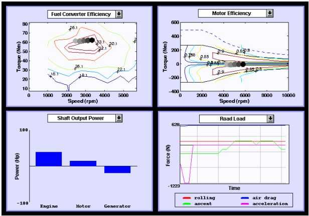

Overview
As seen in Figure 1, the real-time interactive interface layout is
divided into three sections. The top left section is Simulation
Controls. The bottom left section is Vehicle Controls and
Display. The right section is Simulation Outputs. The
Real-time Interactive Interface supports drive cycle inputs and shows dynamic
outputs at each time step of the simulation. These input and output
additions offer several benefits.

Figure 1. Real-time Interactive Interface
Simulation Controls
The Simulation Controls section has interactive drive cycle
inputs. Buttons similar to a tape player control the simulation speed.
A slider adds miles per hour requested (mphr) to the drive cycle at the
current time step of the simulation. A round red spot on the curved
arrow is used to add or subtract grade to the drive cycle at the current
time step of the simulation. The speed and grade are implemented
into ADVISOR's drive_cycle block diagram as illustrated in Figure 2. Below
the Simulation Controls is the Vehicle Controls and Display.

Figure 2. Block Diagram drive_cycle
Vehicle Controls and Display
The Vehicle Controls and Display section shows vehicle outputs.
These outputs are similar to what are found in regular and advanced vehicles.
They include engine rpm, vehicle miles per hour requested (white needle)
and vehicle miles per hour achieved, fuel used, instant fuel economy and
trip (cumulative) fuel economy, batter state of charge (%SOC), current
gear, and acceleration (proportional to gas pedal displacement).
To the right of Vehicle Controls and Display is Simulation Outputs.
Simulation Outputs
The Simulation Outputs section displays vehicle graphics and
technical information. The selection of technical outputs can be
seen in Figure 2. They include the position of operation on the fuel
converter efficiency map and motor efficiency map, the shaft output power
from the engine, motor, and generator, and the road load components.
The Simulation Outputs section offers some of the greatest benefits.

Figure 3. Technical Output Plots
Benefits
Several benefits are derived from the interactive input and the dynamic
output capability offered by the interface. The interactive input
allows for quickly testing vehicle behavior response to drive cycle inputs.
For example, it can show how the fuel economy will respond to an increase
or decrease in grade. The dynamic output capability goes beyond some
of the static plot capabilities. It can trace the position of operation
of the fuel converter or motor on efficiency maps. It can also help
provide the "feel" of driving. For example, if the vehicle control
strategy results in a vehicle shifting every second, it is a recognizable
problem in the real-time environment. It is easy to imagine doing
the shifting every time the interface shows it, and deciding that it shifts
more frequently than most drivers would tolerate. Conversely, it
would be difficult to decide how frequently is too frequently by looking
at a static plot. These are some of the advantages that the real-time
interactive interface brings to ADVISOR.
Last Revision: 01/16/01:ab